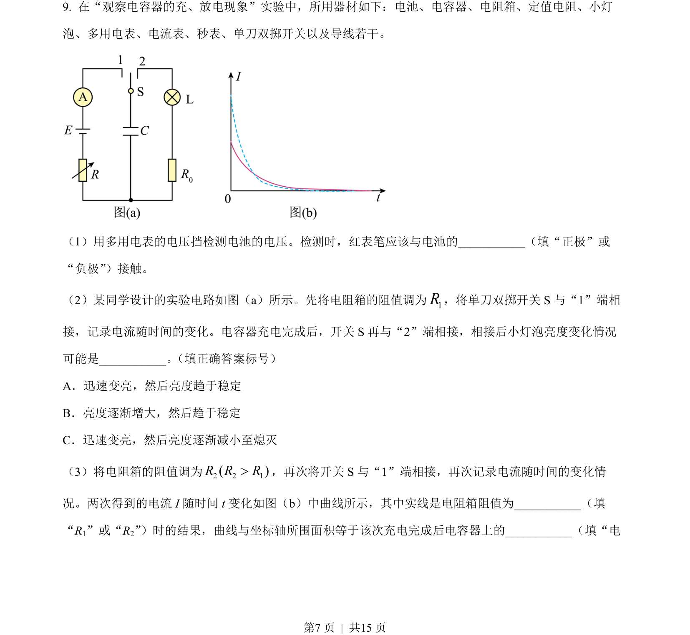
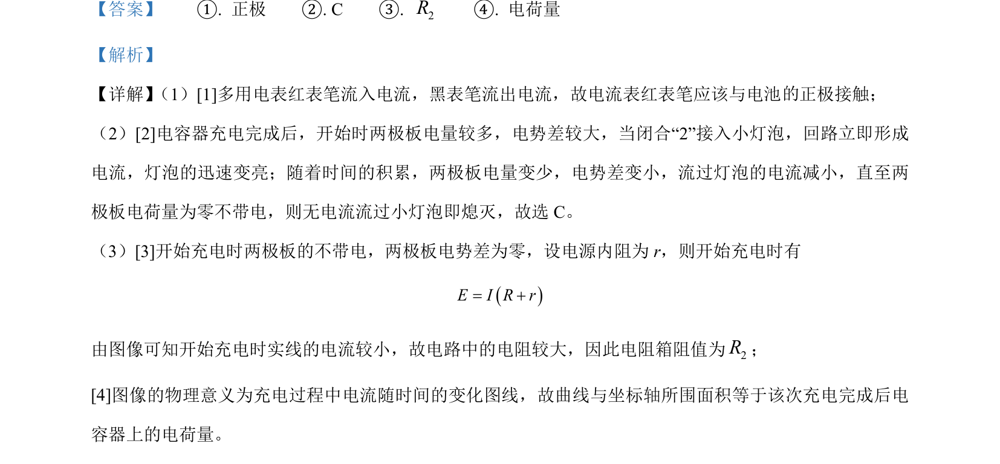

考点：电路分析 电容器充放电 图像面积意义

本题通过多用电表原理和电容器充放电实验，考查电路分析及电流-时间图像的面积意义。

📄 原 PDF 第 7 页：
素材/真题/吉林/2008-2024·（吉林）物理高考真题/2023年高考物理试卷（新课标）（解析卷）.pdf
（1）用多用电表的电压挡检测电池的电压。检测时，红表笔应该与电池的__（填“正极”或 “负极”）接触。 （2）某同学设计的实验电路如图（a）所示。先将电阻箱的阻值调为1R，将单刀双掷开关 S 与“1”端相 接，记录电流随时间的变化。电容器充电完成后，开关 S 再与“2”端相接，相接后小灯泡亮度变化情况 可能是_。 （填正确答案标号） A．迅速变亮，然后亮度趋于稳定 B．亮度逐渐增大，然后趋于稳定 C．迅速变亮，然后亮度逐渐减小至熄灭 （3）将电阻箱的阻值调为2 2 1( )R R R>，再次将开关 S 与“1”端相接，再次记录电流随时间的变化情 况。两次得到的电流 I 随时间 t变化如图（b）中曲线所示，其中实线是电阻箱阻值为__（填 “R1”或“R2”）时的结果，曲线与坐标轴所围面积等于该次充电完成后电容器上的_（填“电